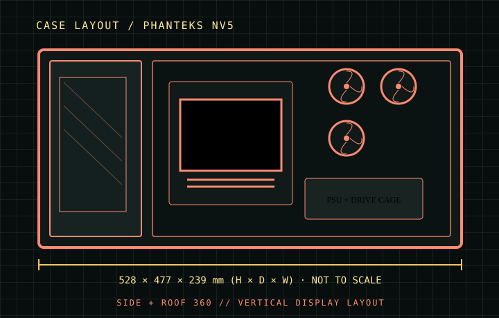

[ CASES // IDENTIFIED CHASSIS ]
Phanteks NV5
The NV5 is a glass-sided mid-tower organized around vertical motherboard presentation, side intake, and a covered lower power-supply area. Its published 440 mm graphics-card envelope is generous, while the E-ATX limit is explicitly width-bounded; front/side cooling positions should not be conflated with the conventional front mount used by mesh towers.

MODEL SCOPE: Specifications describe the named enclosure generation, not every visually similar case or retail bundle. Published maximums are component-envelope limits; verify the exact SKU, installed fans/radiators, connectors, and manufacturer manual before purchase or assembly.
Dimensions & compatibility
| Cataloged model | Phanteks NV5 |
|---|---|
| Generation / class | 2023 · E-ATX panoramic mid-tower |
| External dimensions | 528 × 477 × 239 mm (H × D × W) |
| Motherboard fit | Mini-ITX, Micro-ATX, ATX and E-ATX up to 280 mm wide. |
| Drive compatibility | Up to four 2.5-inch and three 3.5-inch drives, using the available mounting positions/brackets. |
| Graphics card | Up to 440 mm long; width limit 170 mm in the published layout. |
| CPU air cooler | Up to 180 mm tower height. |
| Power supply | Up to 230 mm. |
| Fans and radiators | Up to eight 120 mm fans: roof 3, side 3, floor 1 and rear 1. Radiators: roof and side up to 360 mm; rear up to 120 mm. Radiator thickness is bounded by the adjacent chamber and cable space. |
Fit notes for this layout
The attractive open side is a presentation surface, not a forward-facing mesh intake. Cooling planning should account for intake filtering, side radiator tubing, the 170 mm GPU-width envelope and access to the service chamber.
- For a side 360 mm radiator, check radiator-plus-fan thickness against long/wide GPUs and plan tube routing before installing the graphics card.
- E-ATX support stops at 280 mm board width; wider EEB-class boards may cover cable openings or mounting hardware.
- The D-RGB fan/lighting controller and bundled fan count vary by package; the NV5 enclosure itself does not imply a particular fan kit.
Source record
- Phanteks — NV5 product specificationsManufacturer dimensions, board fit and cooling layout.
- ComponentScale — Phanteks NV5 specificationsIndependent model-specific drive, clearance and cooling specification summary.
- ManualsLib — Phanteks NV5 installation manualAssembly and mounting diagrams for this model.
Case specifications are manufacturer-rated maximums unless stated otherwise. Component shape, mounting hardware and assembly order can reduce practical clearance; consult the exact revision manual when dimensions are critical.